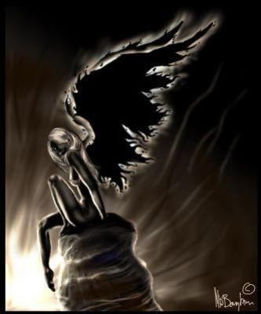

Forums galactiques > Assemblée Galactique : diplomatie officielle > [RP]Sa fin,son âme au paradis.
Pages : 1
| Cignia Respect diplomatique : 125  13/09 ETU 11:57 | Score : 3 Détails Elle ne se sentait pas bien ces derniers temps. Peut être que tous ce travail a sa charge faisait peser son poids a présent.
Allongé sur le fauteuil, elle pensait. A quoi ? A quoi pouvait-elle penser maintenant que tout était terminé ? A tous ce qu’elle avait vécut tout…. . Elle s’arrêta net. Des pas se faisaient entendre dans le long couloir menant à sa chambre et se rapprochaient de plus en plus. Qui pouvait bien venir la voir a cette heure ci ? On frappa. D’une voix calme et presque faible, elle invita la personne a rentrer, ne se sentant pas la force de se lever pour l’accueillir. Michael entra doucement et referma la porte. -Quelle surprise ! Toi ici ? Tu n’a pas du travail ? -Non sinon je ne serais pas ici même. -Et dire que quand j’étais a ta place je travaillais jour et nuit ! -Nous n’avons pas la même conception du mot travail. Pour moi le travail ; ce n’est pas a moi de l’accomplir, c’est au peuple. C’est moi qui le dirige et il me doit tout. Ainsi donc j’exige qu’il fasse tout pour moi comme j’ai tout fait pour lui. -Qu’ est ce que tu viens de dire ? Mais nous avions pourtant les mêmes idées, le même point de vue et les mêmes ambitions ! Tu mène mon peuple à sa perte ! Qu’est ce qu’il t’arrive Michael ? Je ne te savais pas comme ca. -Tu ne m’a jamais vraiment connu, jamais tu n’a su mes véritables ambitions. Je ne suis pas comme toi. Je vis pour moi et par pour les autres. Je ne suis pas un pauvre petit pleurnichard qui se focalise sur son passé tragique pour guider son avenir. Je ne te ressemble pas moi. -Michael je ne comprends pas ? Tout ce que tu as fait pour moi, tu ne l’a pas vraiment fait ? Pourquoi m’a tu guéris ? Pourquoi tu m’as aidée ? -Je t’ai mentis, j’ai fait tout cela pour le pouvoir. C’est ma soif de vengeance qui m’a poussé a le faire. Tout cela est de ta faute. Tout le monde t’a aimé, et moi a coté je n’étais que le pauvre assistant ! Mais tu te rends compte de ce que tu me dit la ? -Oui je m’en rends compte et je sais que tu souffre. Comme ca tu sauras ce que ca fait un peu de souffrir ! Mais ne t’inquiète pas, tu ne vas pas rester comme ca très longtemps. Il s’approcha doucement d’elle et sortit un torchon de sa poche. -Michael qu’est ce que tu fais la ? Réfléchis un peu avant ! Ne fait pas ca je t’en prie !!Pense au peuple à tous ces gens, à tous mes amis, ils vont être tristes !!!Je m’en fous moi de mourir, je ne crains plus la souffrance, ni ce qui la suis, tellement elle est ancrée en moi, mais les autres… -Je me fiche des autres, tout ce que je sais c’est que tu es plus heureuse que moi et ca je ne supporte pas ! Tant pis pour toi ! -Michael !!... Avec vivacité il s’empara d’elle et l’étrangla violement. Se débattant comme elle put, Cignia sentit sa fin arriver et elle se résigna à se battre. Tout cela n’avait plus aucune importance maintenant. C’est ainsi que son esprit la quitta. Au paradis elle s’en fut allée. Michael la regarda une dernière fois, puis repartit à d’autres occupations, sans doute plus importantes pour lui. Cignia était morte. Tel était le message placardé sur tous les panneaux d’affichages. Le peuple souffrait et seul Michael gardait un sourire aux lèvres. Le dernier de ses sourires avant l’horreur. [HRP]Ceux qui veulent poursuivre le peuvent, sans salir l’image de Cignia bien sur. Je vous souhaite une bonne continuation à tous et je vous dis a bientôt. [HPR] |
Pages : 1
Forums galactiques > Assemblée Galactique : diplomatie officielle > [RP]Sa fin,son âme au paradis.